App Development
習い事の連絡も、
出欠も、スマホひとつで。
スポーツクラブ・教室・スクールなど、子どもの習い事のために作った「予定の連絡」と「出欠確認」のアプリです。 企画から開発、公開後の運用まで、私ひとりで手がけています。 子ども50人以上のクラブで、実際に毎日使われています。
- 予定はカレンダーで
- 出欠はタップで回答
- 集計は自動
- インストール不要
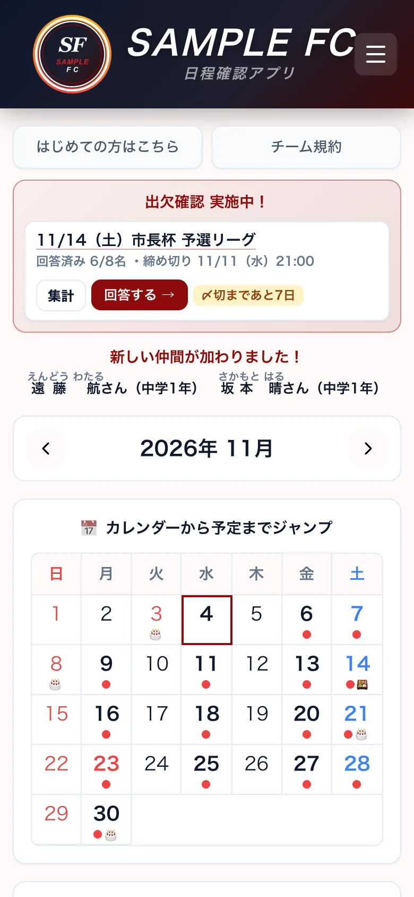
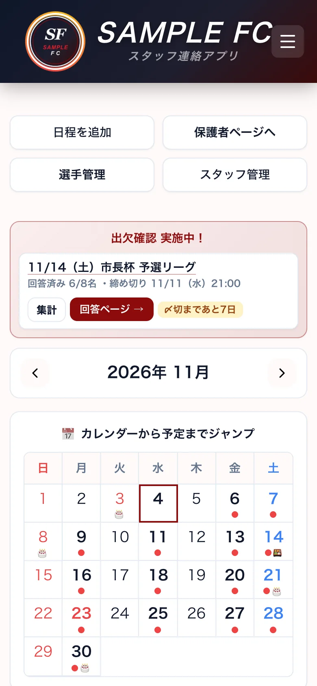
Problems & Solutions
毎週の「連絡」と「数える手間」を、
アプリが代わりにやります。
習い事の先生・コーチ・代表の方が、練習やレッスンの外で抱えている手間を減らすために作りました。
-
いま困っていること「出欠をLINEで聞くと、返事が流れて、数えるのが大変」
このアプリなら保護者は名前をタップするだけで回答。参加・不参加の人数は自動で集計されます。
-
いま困っていること「1か月の予定表を紙で配っても、途中で場所や時間が変わってしまう」
このアプリなら変わったらアプリで直すだけ。保護者はいつでも最新の予定を見られて、紙の配り直しはいりません。
-
いま困っていること「練習やレッスンの時間・場所を、何度も聞かれる」
このアプリなら予定はカレンダーに。時間・場所・持ち物まで、いつでも見られます。
-
いま困っていること「当日、先生やコーチが何人そろうのか分からない」
このアプリなら先生・コーチ専用のページで〇△✕。だれが来るかひと目で分かります。
-
いま困っていること「大会やイベントのお弁当の注文を、紙やLINEで集めている」
このアプリなら予定にお弁当の注文をつけるだけ。個数と合計金額も自動で計算します。
Movie
実際の画面を、動画でご覧ください。
画面を押すと再生できます。見本のサッカークラブ「SAMPLE FC」の画面です（音は出ません）。
Features
使う人ごとに、ページを分けています。
保護者のページ、先生・コーチのページ、名簿。それぞれ別の暗証番号（4桁）で入るので、保護者が先生・コーチのページや名簿を見ることはありません。
保護者保護者のページ
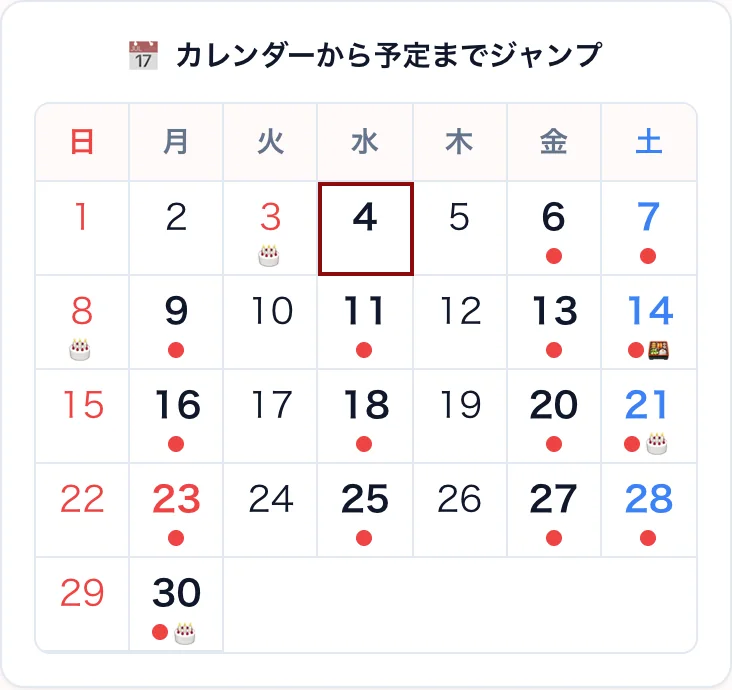
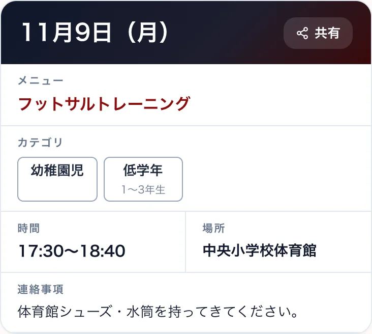
予定はカレンダーで、ひと目でわかる。
「次の練習はいつ？」「どこでやるの？」と聞かれることが減ります。
- 日付をタップすると、その日の予定へジャンプ
- 時間・場所・持ち物は1枚のカードに
- 場所や時間が変わっても、直せばすぐ全員に最新の予定が届く
- 「共有」ボタンでLINEにそのまま送れる
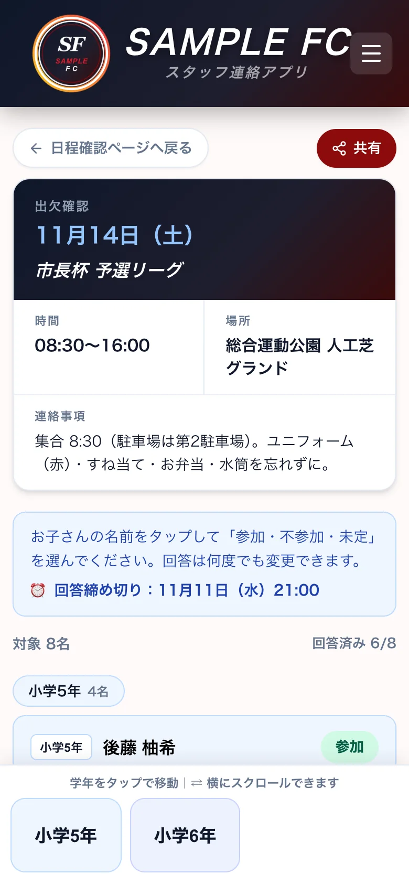
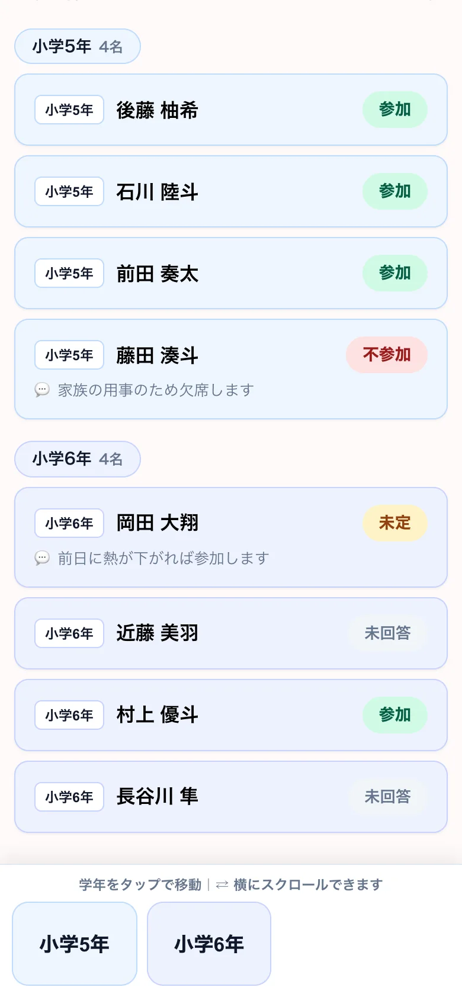
出欠は、名前をタップして答えるだけ。
先生・コーチが作った「出欠確認」のリンクをLINEで送るだけ。保護者はスマホで答えます。
- お子さんの名前をタップして、「参加」「不参加」「未定」を選ぶ
- 「前日に熱が下がれば参加します」など、ひとこと添えられる
- 何度でも変更OK。締め切りまでの日数も表示
- 締め切りを過ぎると、自動で回答を止める
先生・コーチ先生・コーチのページ
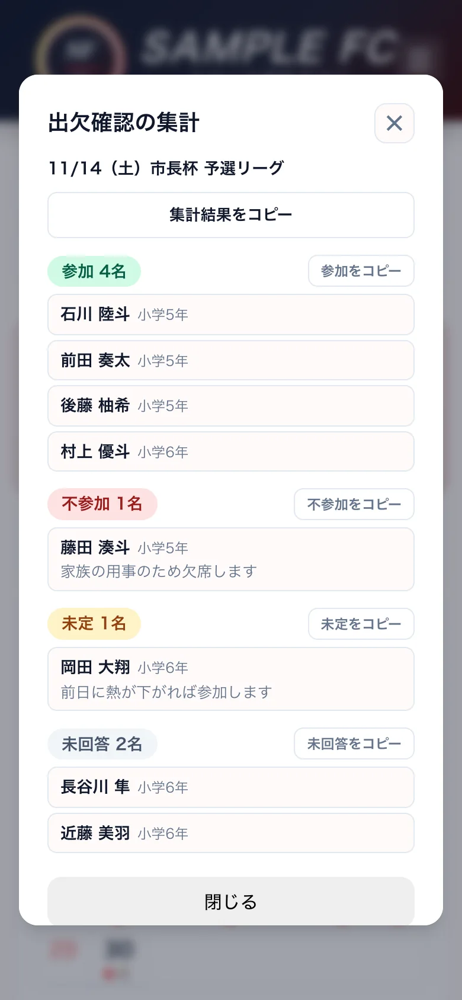
出欠の集計は、もう終わっています。
保護者が答えた瞬間に、先生・コーチのページで数がそろいます。数える作業はいりません。
- 参加・不参加・未定・未回答に自動で分かれる
- まだ答えていない子がすぐ分かる
- 名前をまとめてコピーして、大会・発表会の申込書に貼れる
- 保護者のひとことも一緒に見られる
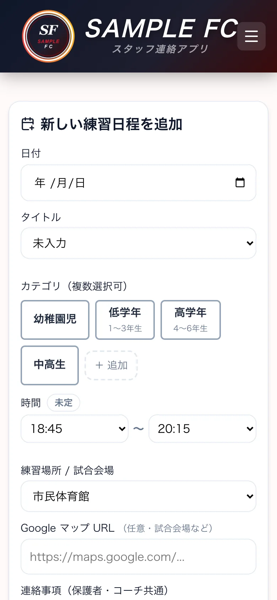
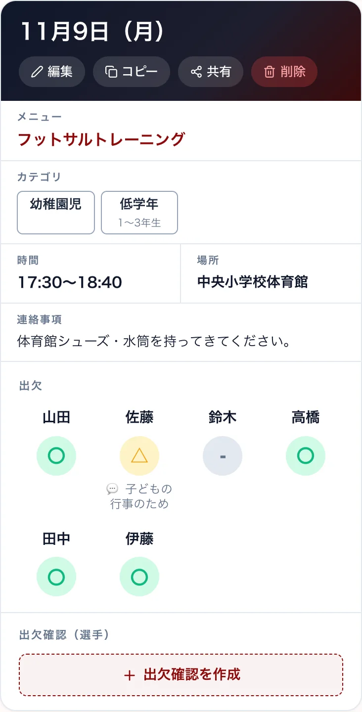
予定の登録は、スマホで1分。
入れた予定は、すぐに保護者のカレンダーに出ます。先生・コーチ同士の出欠も、同じページで取れます。
- 会場はよく使う場所から選ぶだけ。「コピー」で同じような予定もすぐ作れる
- 保護者への連絡と先生・コーチだけのメモを分けて書ける
- プリント（PDF・画像）の添付や、地図のリンクも
- 先生・コーチは予定ごとに〇△✕で出欠。「20分遅れます」などのメモも残せる
運営運営を助ける機能
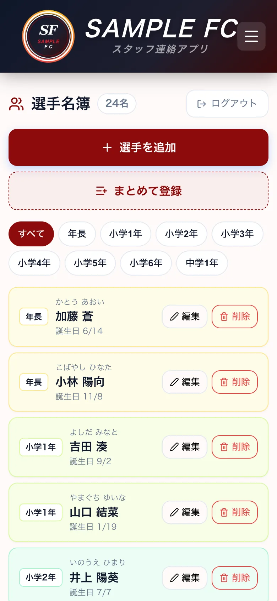
名簿も、アプリの中に。
名簿があるから、出欠確認の対象選びも、誕生日のお祝いも自動でできます。
- 学年ごとに並ぶ名簿。ふりがな・誕生日も入れられる
- 名前を並べて貼るだけでまとめて登録
- 今月の誕生日と新しく入った仲間を、保護者のページで自動で紹介
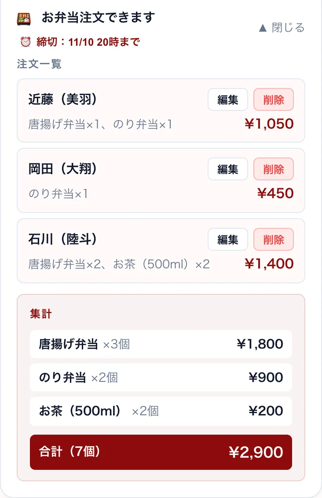
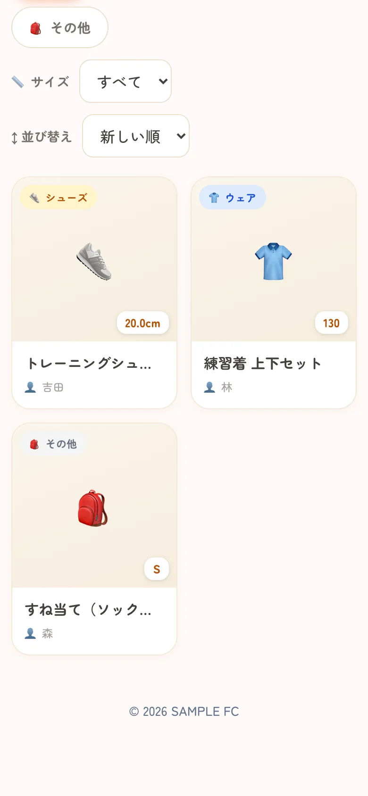
お弁当の注文も、ゆずりあいも。
連絡と出欠のほかにも、習い事の運営でよくある手間をアプリにまとめました。
- 大会やイベントの予定に、メニューと締め切りをつけるだけ。個数と合計金額は自動で計算
- サイズアウトしたウェアや道具を写真つきで載せる用品のゆずりあい掲示板
- 入会時の規約・お約束と、はじめての方ガイドをいつでも確認できる
Development
現場の困りごとを、
そのままアプリにします。
このアプリは、企画から開発、公開後の運用まで、私ひとりで手がけています。現場で本当に困っていることを直接お聞きし、そのまま使える形にするのが私のアプリ・ツール開発です。
企画から運用まで、ひとりで
画面の設計、プログラム、データの保存先、公開、公開後の改善まで。分業せずに一貫して進めるので、話が早く、費用も抑えられます。
現場の声を、すぐ形に
「イベントの参加人数を家族ごとに集計したい」といった要望が出たら、短い期間で機能を足して公開。使いながら育てていけます。
実際に、毎日使われている
見本ではなく、子ども50人以上のクラブで保護者と先生・コーチが毎日使っているアプリです。使われる中で見つかった不便を直し続けています。
習い事が変わっても使える
サッカークラブ向けに作ったものを、和太鼓のチーム向けに言葉や区分を入れ替えた版も作りました。土台を活かして、別の現場へ広げられます。
「うちの仕事にも、こういう仕組みがほしい」
そんなご相談から、一緒に形にします。
Customize
あなたの習い事に合わせて、
アプリの中を調整できます。
教室に合わせられるところ
- 呼び方（例：選手→生徒、コーチ→先生、練習→レッスン）
- 学年・クラス・コースの区分、会場の候補
- お弁当の注文・ゆずりあい掲示板など、使う機能を選ぶ
- 教室の名前・ロゴ・色
安心して使えます
- インストール不要。URLを開くだけ。iPhoneでもAndroidでも
- ホーム画面に追加すると、アイコンからアプリのように開ける
- ページごとに4桁の暗証番号。何度も間違えると自動でロック
- データは教室ごとに別。ほかの教室と混ざりません
※このページの画面と動画の「SAMPLE FC」と、その子ども・コーチは、お試し用の架空のクラブです。
Contact
まずは、お試し版を触ってみませんか。
見本のクラブ「SAMPLE FC」で、保護者のページも先生・コーチのページも実際に操作できるお試し版をご用意しています。
ご希望の方に、URLと暗証番号をお伝えします。
「うちの教室ならこうしたい」「うちの仕事に合うアプリやツールを作りたい」といったご相談も、お気軽にどうぞ。